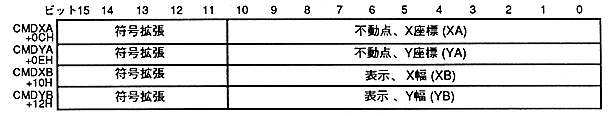
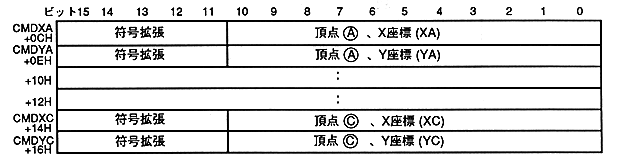

Return to previous page ｜ Return to menu ｜ Go to next page
- When a value other than 0 is specified for the zoom point (ZP), the sprite drawing position and drawing size are determined by the zoom point (ZP), fixed point coordinates, and display width.
∙ The fixed point of the character specified by the zoom point is drawn in the fixed point coordinates (CMDXA, CMDYA).
The drawing size is determined by the display width (CMDXB, CMDYB).
∙ When zoomed out, pixels may be thinned out and the specified fixed point may disappear.
∙ Do not specify a value other than that determined as the zoom point. Drawing is not guaranteed if a value other than the specified value is specified.
Since the length of the character size in the X direction is a multiple of 8, even if you specify the center, the fixed point will not be exactly the center. If the length in the Y direction is even, it will not be centered.
The character drawing direction is specified by the character reading direction bit.
∙ If the display width in the X direction is negative, drawing is performed in the X direction opposite to the direction specified by the X character read bit. If the display width in the Y direction is negative, drawing is performed in the Y direction opposite to the direction specified by the Y direction character read bit.
- Specify fixed point
- When ZP is other than 0H, specify the fixed point coordinates as CMDXA and CMDY, and the display width as CMDXB and CMDYB.

- Specify two coordinates
- When ZP is 0H, the upper left coordinate and lower right coordinate are specified. Specify the vertex as CMDXA and CMDY, and the vertex as CMDXC and CMDYC.

Return to previous page ｜ Return to menu ｜ Go to next page